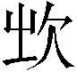
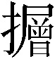
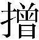

第十九回 情切切良宵花解语 意绵绵静日玉生香12
话说贾妃回宫，次日见驾谢恩，并回奏归省之事。龙颜甚悦，又发内帑彩缎金银等物，以赐贾政及各椒房等员，不必细说。
且说荣宁二府中因连日用尽心力，真是人人力倦，各各神疲，又将园中一应陈设动用之物收拾了两三天方完。第一个凤姐事多任重，别人或可偷安躲静，独他是不能脱得的；二则本性要强，不肯落人褒贬，只拃挣着与无事的人一样。
第一个宝玉是极无事最闲暇的。偏这日一早，袭人的母亲又亲来回过贾母，接袭人家去吃年茶，晚间才得回来。因此，宝玉只和众丫头们掷骰子赶围棋作戏。正在房内顽的没兴头，忽见丫头们来回说：”东府珍大爷来请过去看戏、放花灯。”宝玉听了，便命换衣裳。才要去时，忽又有贾妃赐出糖蒸酥酪来；宝玉想上次袭人喜吃此物，便命留与袭人了。自己回过贾母，过去看戏。
谁想贾珍这边唱的是《丁郎认父》、《黄伯央大摆阴魂阵》，更有《孙行者大闹天宫》、《姜子牙斩将封神》等类的戏文3，倏尔神鬼乱出，忽又妖魔毕露，甚至于扬幡过会，号佛4行香，锣鼓喊叫之声远闻巷外。满街之人个个都赞：”好热闹戏，别人家断不能有的。”宝玉见繁华热闹到如此不堪的田地，只略坐了一坐，便走开各处闲耍。先是进内去和尤氏和丫鬟姬妾说笑了一回，便出二门来。
尤氏等仍料他出来看戏，遂也不曾照管。贾珍、贾琏、薛蟠等只顾猜枚行令，百般作乐，也不理论，纵一时不见他在座，只道在里边去了，故也不问。至于跟宝玉的小厮们，那年纪大些的，知宝玉这一来了，必是晚间才散，因此偷空也有去会赌的，也有往亲友家去吃年茶的，更有或嫖或饮的，都私散了，待晚间再来；那小些的，都钻进戏房里瞧热闹去了。
宝玉见一个人没有，因想”这里素日有个小书房5，内曾挂着一轴美人，极画的得神。今日这般热闹，想那里自然无人6，那美人也自然是寂寞的，须得我去7望慰他一回。”想着，便往书房里来。刚到窗前，闻得房内有呻吟之韵。宝玉倒唬了一跳：敢是美人活了不成？乃乍着胆子，舔破窗纸，向内一看——那轴美人却不曾活，却是茗烟按着一个女孩子，也干那警幻所训之事。宝玉禁不住大叫：”了不得！”一脚踹进门去，将那两个唬开了，抖衣而颤。
茗烟见是宝玉，忙跪求不迭。宝玉道：”青天白日，这是怎么说。珍大爷知道，你是死是活？”一面看那丫头，虽不标致，倒还白净，些微亦有动人处，羞的脸红耳赤，低首无言。宝玉跺脚道：”还不快跑！”一语提醒了那丫头，飞也似去了。宝玉又赶出去，叫道：”你别怕，我是不告诉人的。”急的茗烟在后叫：”祖宗，这是分明告诉人了！”宝玉因问：”那丫头十几岁了？”茗烟道：”大不过十六七岁了。”宝玉道：”连他的岁属也不问问，别的自然越发不知了。可见他白认得你了。可怜，可怜！”又问：”名字叫什么？”茗烟大笑道：”若说出名字来话长——真真新鲜奇文，竟是写不出来的。据他说，他母亲养他的时节做了个梦，梦见得了一匹锦，上面是五色富贵不断头卍字的花样，所以他的名字叫作卍儿8。”宝玉听了笑道：”真也新奇，想必他将来有些造化。”说着，沉思一会。
茗烟因问：”二爷为何不看这样的好戏？”宝玉道：”看了半日，怪烦的，出来逛逛，就遇见你们了。这会子作什么呢？”茗烟9笑道：”这会子没人知道，我悄悄的引二爷往城外逛逛去，一会子再往这里来，他们就不知道了。”宝玉道：”不好，仔细花子10拐了去。便是他们知道了，又闹大了，不如往熟近些的地方去，还可就来。”茗烟道：”熟近地方，谁家可去？这却难了。”宝玉笑道：”依我的主意，咱们竟找你花大姐姐去，瞧他在家作什么呢。”茗烟笑道：”好，好！倒忘了他家。”又道：”若他们知道了，说我引着二爷胡走，要打我呢？”宝玉道：”有我呢。”茗烟听说，拉了马，二人从后门就走了。
幸而袭人家不远，不过一半里路程，展眼已到门前。茗烟先进去叫袭人之兄花自芳。彼时袭人之母接了袭人与几个外甥女儿、几个侄女儿来家，正吃果茶。听见外面有人叫”花大哥”，花自芳慌忙出去看时，见是他主仆两个，唬的惊疑不止，连忙抱下宝玉来，在院内嚷道：”宝二爷来了！”别人听见还可，袭人听了，也不知为何，忙跑出来迎着宝玉，一把拉着问：”你怎么来了？”宝玉笑道：”我怪闷的，来瞧瞧你作什么呢。”袭人听了，才放下心来，嗐11了一声，笑道：”你也忒胡闹了，可作什么来呢！”一面又问茗烟：”还有谁跟来？”茗烟笑道：”别人都不知，就只我们两个。”袭人听了，复又惊慌，说道：”这还了得！倘或碰见了人，或是遇见了老爷，街上人挤车碰，马轿纷纷的，若有个闪失，也是顽得的！你们的胆子比斗还大。都是茗烟调唆的，回去我定告诉嬷嬷们打你。”茗烟撅了嘴道：”二爷骂着打着，叫我引了来，这会子推到我身上。我说别来罢，——不然我们还去罢。”花自芳忙劝：”罢了，已是来了，也不用多说了。只是茅檐草舍，又窄又脏，爷怎么坐呢？”
袭人之母也早迎了出来。袭人拉了宝玉进去。宝玉见房中三五个女孩儿，见他进来，都低了头，羞惭惭的。花自芳母子两个百般怕宝玉冷，又让他上炕，又忙另摆果桌，又忙倒好茶。袭人笑道：”你们不用白忙，我自然知道。果子也不用摆，也不敢乱给东西吃。”一面说，一面将自己的坐褥拿了铺在一个杌上，宝玉坐了；用自己的脚炉垫了脚；向荷包内取出两个梅花香饼儿12来，又将自己的手炉掀开焚上，仍盖好，放与宝玉怀内；然后将自己的茶杯斟了茶，送与宝玉。彼时他母兄已是忙另齐齐整整摆上一桌子果品来。袭人见总无可吃之物，因笑道：”既来了，没有空去之理，好歹尝一点儿，也是来我家一趟。”说着，便拈了几个松子穰，吹去细皮，用手帕托着送与宝玉。
宝玉看见袭人两眼微红，粉光融滑，因悄问袭人：”好好的哭什么？”袭人笑道：”何尝哭，才迷了眼揉的。”因此便遮掩过了。当下宝玉穿着大红金蟒狐腋箭袖，外罩石青貂裘排穗褂。袭人道：”你特为往这里来又换新服，他们就不问你往那去的？”宝玉笑道：”珍大爷那里去看戏换的。”袭人点头。又道：”坐一坐就回去罢，这个地方不是你来的。”宝玉笑道：”你就家去才好呢，我还替你留着好东西呢。”袭人悄笑道：”悄悄的，叫他们听着什么意思。”一面又伸手从宝玉项上将通灵玉摘了下来，向他姊妹们笑道：”你们见识见识。时常说起来都当希罕，恨不能一见，今儿可尽力瞧了。再瞧什么希罕物儿，也不过是这么个东西。”说毕，递与他们传看了一遍，仍与宝玉挂好。又命他哥哥去或雇一乘小轿，或雇一辆小车，送宝玉回去。花自芳道：”有我送去，骑马也不妨了。”袭人道：”不为不妨，为的是碰见人。”
花自芳忙去雇了一顶小轿来，众人也不敢相留，只得送宝玉出去。袭人又抓些果子与茗烟，又把些钱与他买花炮放，教他”不可告诉人，连你也有不是”。一直送宝玉至门前，看着上轿，放下轿帘。花、茗二人牵马跟随。来至宁府街，茗烟命住轿，向花自芳道：”须等我同二爷还到东府里混一混，才好过去的，不然人家就疑惑了。”花自芳听说有理，忙将宝玉抱出轿来，送上马去。宝玉笑说：”倒难为你了。”于是仍进后门来。俱不在话下。
却说宝玉自出了门，他房中这些丫鬟们都越性恣意的顽笑，也有赶围棋的，也有掷骰抹牌的，嗑了一地瓜子皮。偏奶母李嬷嬷拄拐进来请安，瞧瞧宝玉，见宝玉不在家，丫头们只顾顽闹，十分看不过。因叹道：”只从我出去了，不大进来，你们越发没个样儿了，别的妈妈们越不敢说你们了。那宝玉是个丈八的灯台——照见人家，照不见自家的。只知嫌人家脏，这是他的屋子，由着你们遭塌，越不成体统了。”这些丫头们明知宝玉不讲究这些，二则李嬷嬷已是告老解事出去的了，如今管他们不着，因此只顾顽，并不理他。那李嬷嬷还只管问”宝玉如今一顿吃多少饭”、”什么时辰睡觉”等语。丫头们总胡乱答应。有的说：”好一个讨厌的老货！13”
李嬷嬷又问道：”这盖碗里是酥酪，怎不送与我去？我就吃了罢。”说毕，拿匙就吃。一个丫头道：”快别动！那是说了给袭人留着的，回来又惹气了。你老人家自己承认，别带累我们受气。”李嬷嬷听了，又气又愧，便说道：”我不信他这样坏了。别说我吃了一碗牛奶，就是再比这个值钱的，也是应该的。难道待袭人比我还重？难道他不想想怎么长大了？我的血变的奶，吃的长这么大，如今我吃他一碗牛奶，他就生气了？我偏吃了，看怎么样！你们看袭人不知怎样，那是我手里调理出来的毛丫头，什么阿物儿14！”一面说，一面赌气将酥酪吃尽。又一丫头笑道：”他们不会说话，怨不得你老人家生气。宝玉还时常送东西孝敬你老去，岂有为这个不自在的。”李嬷嬷道：”你们也不必妆狐媚子15哄我，打量上次为茶撵茜雪的事我不知道呢。明儿有了不是，我再来领！”说着，赌气去了。
少时，宝玉回来，命人去接袭人。只见晴雯躺在床上不动，宝玉因问：”敢是病了？再不然输了？”秋纹道：”他倒是赢的。谁知李老太太来了，混输了，他气的睡去了。”宝玉笑道：”你别和他一般见识，由他去就是了。”说着，袭人已来，彼此相见。袭人又问宝玉何处吃饭，多早晚回来，又代母妹问诸同伴姊妹好。一时换衣卸妆。宝玉命取酥酪来，丫鬟们回说：”李奶奶吃了。”宝玉才要说话，袭人便忙笑道：”原来是留的这个，多谢费心。前儿我吃的时候好吃，吃过了好肚子疼，足的吐了才好。他吃了倒好，搁在这里倒白遭塌了。我只想风干栗子吃，你替我剥栗子，我去铺床。”
宝玉听了信以为真，方把酥酪丢开，取栗子来，自向灯前检剥。一面见众人不在房中，乃笑问袭人道：”今儿那个穿红的是你什么人？”袭人道：”那是我两姨妹子。”宝玉听了，赞叹了两声。袭人道：”叹什么？我知道你心里的缘故，想是说他那里配红的。”宝玉笑道：”不是，不是。那样的人不配穿红的，谁还敢穿。我因为见他实在好的很，怎么也得他在咱们家就好了。”袭人冷笑道：”我一个人是奴才命罢了，难道连我的亲戚都是奴才命不成？定还要拣实在好的丫头才往你家来。”宝玉听了，忙笑道：”你又多心了。我说往咱们家来，必定是奴才不成？说亲戚就使不得？”袭人道：”那也搬配不上。”
宝玉便不肯再说，只是剥栗子。袭人笑道：”怎么不言语了？想是我才冒撞冲犯了你，明儿赌气花几两银子买他们进来就是了。”宝玉笑道：”你说的话，怎么叫我答言呢。我不过是赞他好，正配生在这深堂大院里，没的我们这种浊物倒生在这里。”袭人道：”他虽没这造化，倒也是娇生惯养的呢，我姨爹姨娘的宝贝。如今十七岁，各样的嫁妆都齐备了，明年就出嫁。”宝玉听了”出嫁”二字，不禁又嗐了两声。正是不自在，又听袭人叹道：”只从我来这几年，姊妹们都不得在一处。如今我要回去了，他们又都去了。”
宝玉听这话内有文章，不觉吃一惊，忙丢下栗子，问道：”怎么，你如今要回去了？”袭人道：”我今儿听见我妈和哥哥商议，教我再耐烦一年，明年他们上来，就赎我出去的呢。”宝玉听了这话，越发怔了，因问：”为什么要赎你？”袭人道：”这话奇了！我又比不得是你这里的家生子儿16，一家子都在别处，独我一个人在这里，怎么是个了局？”宝玉道：”我不叫你去也难。”袭人道：”从来没这道理。便是朝廷宫里，也有个定例，或几年一选，几年一入，也没有个长远留下人的理，别说你了！”
宝玉想一想，果然有理。又道：”老太太不放你也难。”袭人道：”为什么不放？我果然是个最难得的，或者感动了老太太，老太太必不放我出去的，设或多给我们家几两银子，留下我，然或有之；其实我也不过是个平常的人，比我强的多而且多。自我从小儿来了，跟着老太太，先服侍了史大姑娘几年，如今又服侍了你几年。如今我们家来赎，正是该叫去的，只怕连身价也不要，就开恩叫我去呢。若说为服侍的你好，不叫我去，断然没有的事。那服侍的好，是分内应当的，不是什么奇功。我去了，仍旧有好的来，不是没了我就不成事。”
宝玉听了这些话，竟是有去的理，无留的理，心内越发急了，因又道：”虽然如此说，我只一心留下你，不怕老太太不和你母亲说。多多给你母亲些银子，他也不好意思接你了。”袭人道：”我妈自然不敢强。且慢说和他好说，又多给银子；就便不好和他说，一个钱也不给，安心要强留下我，他也不敢不依。但只是咱们家从没干过这倚势仗贵霸道的事。这比不得别的东西，因为你喜欢，加十倍利弄了来给你，那卖的人不得吃亏，可以行得。如今无故平空留下我，于你又无益，反叫我们骨肉分离，这件事，老太太、太太断不肯行的。”宝玉听了，思忖半晌，乃说道：”依你说，你是去定了？”袭人道：”去定了。”宝玉听了，自思道：”谁知这样一个人，这样薄情无义。”乃叹道：”早知道都是要去的，我就不该弄了来，临了剩我一个孤鬼儿。”说着，便赌气上床睡去了。
原来袭人在家，听见他母兄要赎他回去，他就说至死也不回去的。又说：”当日原是你们没饭吃，就剩我还值几两银子，若不叫你们卖，没有个看着老子娘饿死的理。如今幸而卖到这个地方，吃穿和主子一样，又不朝打暮骂。况且如今爹虽没了，你们却又整理的家成业就，复了元气。若果然还艰难，把我赎出来，再多掏澄17几个钱，也还罢了，其实又不难了。这会子又赎我作什么？权当我死了，再不必起赎我的念头！”因此哭闹了一阵。
他母兄见他这般坚执，自然必不出来的了。况且原是卖倒的死契18，明仗着贾宅是慈善宽厚之家，不过求一求，只怕身价银一并赏了还是有的事呢。二则，贾府中从不曾作践下人，只有恩多威少的。且凡老少房中所有亲侍的女孩子们，更比待家下众人不同，平常寒薄人家的小姐，也不能那样尊重的。因此，他母子两个也就死心不赎了。次后忽然宝玉去了，他二人又是那般景况，他母子二人心下更明白了，越发石头落了地，而且是意外之想，彼此放心，再无赎念了。
如今且说袭人自幼见宝玉性格异常，其淘气憨顽自是出于众小儿之外，更有几件千奇百怪口不能言的毛病儿。近来仗着祖母溺爱，父母亦不能十分严紧拘管，更觉放荡弛纵，任性恣情，最不喜务正。每欲劝时，料不能听，今日可巧有赎身之论，故先用骗词，以探其情，以压其气，然后好下箴规19。今见他默默睡去了，知其情有不忍，气已馁堕。自己原不想栗子吃的，只因怕为酥酪又生事故，亦如茜雪之茶等事，是以假以栗子为由，混过宝玉不提就完了。于是命小丫头子们将栗子拿去吃了，自己来推宝玉。只见宝玉20泪痕满面，袭人便笑道：”这有什么伤心的，你果然留我，我自然不出去了。”宝玉见这话有文章，便说道：”你倒说说，我还要怎么留你，我自己也难说了。”袭人笑道：”咱们素日好处，再不用说。但今日你安心留我，不在这上头。我另说出两三件事来，你果然依了我，就是你真心留我了，刀搁在脖子上，我也是不出去的了。”
宝玉忙笑道：”你说，那几件？我都依你。好姐姐，好亲姐姐，别说两三件，就是两三百件，我也依。只求你们同看着我，守着我，等我有一日化成了飞灰，——飞灰还不好，灰还有形有迹，还有知识。——等我化成一股轻烟，风一吹便散了的时候，你们也管不得我，我也顾不得你们了。那时凭我去，我也凭你们爱那里去就去了。”话未说完21，急的袭人忙握他的嘴，说：”好好的，正为劝你这些，倒更说的狠了。”宝玉忙说道：”再不说这话了。”袭人道：”这是头一件要改的。”宝玉道：”改了，再要说，你就拧嘴。还有什么？”
袭人道：”第二件，你真喜读书也罢，假喜也罢，只是在老爷跟前或在别人跟前，你别只管批驳诮谤，只作出个喜读书的样子来，也教老爷少生些气，在人前也好说嘴。他心里想着，我家代代读书，只从有了你，不承望你不喜读书，已经他心里又气又愧了。而且背前背后乱说那些混话，凡读书上进的人，你就起个名字叫作’禄蠹’22；又说只除’明明德’23外无书，都是前人自己不能解圣人之书，便另出己意，混编纂出来的。这些话，怎么怨得老爷不气，不时时打你。叫别人怎么想你？”宝玉笑道：”再不说了。那原是那小时不知天高地厚，信口胡说，如今再不敢说了。还有什么？”
袭人道：”再不可毁僧谤道，调脂弄粉。还有更要紧的一件，再不许吃人嘴上擦的胭脂了，与那爱红的毛病儿。”宝玉道：”都改，都改。再有什么，快说。”袭人笑道：”再也没有了。只是百事检点些24，不任意任情的就是了。你若果都依了，便拿八人轿也抬不出我去了。”宝玉笑道：”你在这里长远了，不怕没八人轿你坐。”袭人冷笑道：”这我可不希罕的。有那个福气，没有那个道理。纵坐了，也没甚趣。”
二人正说着，只见秋纹走进来，说：”快三更了，该睡了。方才老太太打发嬷嬷来问，我答应睡了。”宝玉命取表来看时，果然针已指到亥正，方从新盥漱，宽衣安歇，不在话下。
至次日清晨，袭人起来，便觉身体发重，头疼目胀，四肢火热。先时还扎挣的住，次后捱不住，只要睡着，因而和衣躺在炕上。宝玉忙回了贾母，传医诊视，说道：”不过偶感风寒，吃一两剂药疏散疏散就好了。”开方去后，令人取药来煎好。刚服下去，命他盖上被渥汗，宝玉自去黛玉房中来看视。
彼时黛玉自在床上歇午，丫鬟们皆出去自便，满屋内静悄悄的。宝玉揭起绣线软帘，进入里间，只见黛玉睡在那里，忙走上来推他道：”好妹妹，才吃了饭，又睡觉。”将黛玉唤醒。黛玉见是宝玉，因说道：”你且出去逛逛。我前儿闹了一夜，今儿还没有歇过来，浑身酸疼。”宝玉道：”酸疼事小，睡出来的病大。我替你解闷儿，混过困去就好了。”黛玉只合着眼，说道：”我不困，只略歇歇儿，你且别处去闹会子再来。”宝玉推他道：”我往那去呢，见了别人就怪腻的。”
黛玉听了，嗤的一声笑道：”你既要在这里，那边去老老实实的坐着，咱们说话儿。”宝玉道：”我也歪着。”黛玉道：”你就歪着。”宝玉道：”没有枕头，咱们在一个枕头上。”黛玉道：”放屁！外头不是枕头？拿一个来枕着。”宝玉出至外间，看了一看，回来笑道：”那个我不要，也不知是那个脏婆子的。”黛玉听了，睁开眼，起身笑道：”真真你就是我命中的’天魔星’25！请枕这一个。”说着，将自己枕的推与宝玉，又起身将自己的再拿了一个来，自己枕了，二人对面倒下。
黛玉因看见宝玉左边腮上有钮扣大小的一块血渍，便欠身凑近前来，以手抚之细看，又道：”这又是谁的指甲刮破了？”宝玉侧身，一面躲，一面笑道：”不是刮的，只怕是才刚替他们淘漉胭脂膏子，26上了一点儿。”说着，便找手帕子要揩拭。黛玉便用自己的帕子替他揩拭了，口内说道：”你又干这些事了。干也罢了，必定还要带出幌子来。便是舅舅看不见，别人看见了，又当奇事新鲜话儿去学舌讨好儿，吹到舅舅耳朵里，又该大家不干净惹气。”
宝玉总未听见这些话，只闻得一股幽香，却是从黛玉袖中发出，闻之令人醉魂酥骨。宝玉一把便将黛玉的袖子拉住，要瞧笼着何物。黛玉笑道：”冬寒十月，谁带什么香呢。”宝玉笑道：”既然如此，这香是那里来的？”黛玉道：”连我也不知道。想必是柜子里头的香气，衣服上熏染的也未可知。”宝玉摇头道：”未必。这香的气味奇怪，不是那些香饼子、香毬子、香袋子的香。”黛玉冷笑道：”难道我也有什么’罗汉’‘真人’给我些香不成？便是得了奇香，也没有亲哥哥亲兄弟弄了花儿、朵儿、霜儿、雪儿替我炮制。我有的是那些俗香罢了。”
宝玉笑道：”凡我说一句，你就拉上这么些，不给你个利害，也不知道，从今儿可不饶你了。”说着翻身起来，将两只手呵了两口，便伸手向黛玉膈肢窝内两肋下乱挠。黛玉素性触痒不禁，宝玉两手伸来乱挠，便笑的喘不过气来，口里说：”宝玉！你再闹，我就恼了。”宝玉方住了手，笑问道：”你还说这些不说了？”黛玉笑道：”再不敢了。”一面理鬓笑道：”我有奇香，你有’暖香’没有？”
宝玉见问，一时解不来，因问：”什么’暖香’？”黛玉点头叹笑道：”蠢才，蠢才！你有玉，人家就有金来配你27；人家有’冷香’，你就没有’暖香’去配？”宝玉方听出来，笑道：”方才求饶，如今更说狠了。”说着，又去伸手。黛玉忙笑道：”好哥哥，我可不敢了。”宝玉笑道：”饶便饶你，只把袖子我闻一闻。”说着，便拉了袖子笼在面上，闻个不住。黛玉夺了手道：”这可该去了。”宝玉笑道：”去，不能。咱们斯斯文文的躺着说话儿。”说着，复又倒下。黛玉也倒下，用手帕子盖上脸。宝玉有一搭没一搭的说些鬼话，黛玉只不理。宝玉问他几岁上京，路上见何景致古迹，扬州有何遗迹故事，土俗民风。黛玉只不答。
宝玉只怕他睡出病来，便哄他道：”嗳哟！你们扬州衙门里有一件大故事，你可知道？”黛玉见他说的郑重，且又正言厉色，只当是真事，因问：”什么事？”宝玉见问，便忍着笑顺口诌道：
“扬州有一座黛山，山上有个林子洞。”
黛玉笑道：”就是扯谎，自来也没听见这山。”宝玉道：”天下山水多着呢，你那里知道这些不成。等我说完了，你再批评。”黛玉道：”你且说。”宝玉又诌道：
“林子洞里原来有群耗子精。那一年腊月初七日，老耗子升座议事，因说：’明日乃是腊八，世上人都熬腊八粥。如今我们洞中果品短少，须得趁此打劫些来方妙。’乃拔令箭一枝，遣一能干的小耗前去打听。一时小耗回报：’各处察访打听已毕，惟有山下庙里果米最多。’老耗问：’米有几样？果有几品？’小耗道：’米豆成仓，不可胜记。果品有五种：一红枣，二栗子，三落花生，四菱角，五香芋。’老耗听了大喜，即时点耗前去。乃拔令箭问：’谁去偷米？’一耗便接令去偷米。又拔令箭问：’谁去偷豆？’又一耗接令去偷豆。然后一一的都各领令去了。只剩了香芋一种，因又拔令箭问：’谁去偷香芋？’只见一个极小极弱的小耗应道：’我愿去偷香芋。’老耗并众耗见他这样，恐不谙练，且怯懦无力，都不准他去。小耗道：’我虽年小身弱，却是法术无边，口齿伶俐，机谋深远。此去管比他们偷的还巧呢。’众耗忙问：’如何比他们巧呢？’小耗道：’我不学他们直偷。我只摇身一变，也变成个香芋，滚在香芋堆里，使人看不出，听不见，却暗暗的用分身法搬运，渐渐的就搬运尽了。岂不比直偷硬取的巧些？’众耗听了，都道：’妙却妙，只是不知怎么个变法，你先变个我们瞧瞧。’小耗听了，笑道：’这个不难，等我变来。’说毕，摇身说’变’，竟变了一个最标致美貌的一位小姐。众耗忙笑道：’变错了，变错了。原说变果子的，如何变出小姐来？’小耗现形笑道：’我说你们没见世面，只认得这果子是香芋，却不知盐课林老爷的小姐才是真正的香玉呢。’”
黛玉听了，翻身爬起来，按着宝玉笑道：”我把你烂了嘴的！我就知道你是编我呢。”说着，便拧的宝玉连连央告，说：”好妹妹，饶我罢，再不敢了！我因为闻你香，忽然想起这个故典来。”黛玉笑道：”饶骂了人，还说是故典呢。”
一语未了，只见宝钗走来，笑问：”谁说故典呢？我也听听。”黛玉忙让坐，笑道：”你瞧瞧，有谁！他饶28骂了人，还说是故典。”宝钗笑道：”原来是宝兄弟，怨不得他，他肚子里的故典原多。只是可惜一件，凡该用故典之时，他偏就忘了。有今日记得的，前儿夜里的芭蕉诗就该记得。眼面前的倒想不起来，别人冷的那样，你急的只出汗。这会子偏又有记性了。”黛玉听了笑道：”阿弥陀佛！到底是我的好姐姐。你一般也遇见对子29了，可知一还一报，不爽不错的。”刚说到这里30，只听宝玉房中一片声嚷，吵闹起来。正是——
-
回目原缺，原”第十九回”四字为后人所加，己卯、梦稿、蒙府、戚序、舒序、甲辰本回目均作”情切切良宵花解语，意绵绵静日玉生香”，今从各本增补。 ↩
-
花解语——从”解语花”一词来。解语花：即善解人意的、会说话的花。解：会、能的意思。王仁裕《开元天宝遗事》记述唐玄宗时太液池有数枝千叶白莲盛开，帝与贵戚共赏，指杨贵妃对左右说：”争如我解语花。”后常用以比喻美人。这里”花”指花袭人。玉生香：见明余文台梓行《万锦情林》卷一《凤凰台上忆吹箫》：”何如花解语，玉又生香”。这里”玉”指林黛玉。 ↩
-
《丁郎认父》等戏——《丁郎认父》演明代杜文学（一说高文举）被严嵩迫害流落湖广，入赘胡丞相府中，他与前妻所生之子丁郎在街上相遇不敢相认，后入府说明原委才得父子相认。《黄伯央大摆阴魂阵》又名《黄伯英怒摆阴兵阵》，故事本于《七国春秋平话》”黄伯杨下山”，”迷魂阵困孙子四人”等章节，讲燕将乐毅的师父黄伯杨下山布迷魂阵围困齐将孙膑的事，剧情十分热闹。《孙行者大闹天宫》、《姜子牙斩将封神》分别为敷演《西游记》和《封神演义》的故事。 ↩
-
号佛——口宣佛号，即大声念佛。 ↩
-
“有个小书房”，底本”房”下有”名”字并空五字地位，可能是作者拟为小书房起名空下的，后来书房名未起，故将”名”字点去。 ↩
-
“今日这般热闹，想那里自然无人”，原”自然”二字点去，下空半行地位，为求上下文字衔接，此处各本均有改动。甲辰本保留”自然”二字，下添”无人”二字，今从。 ↩
-
“须得我去”，原无”须”字，从各本补。 ↩
-
“叫作卍儿”，己卯、蒙府、戚序、舒序诸本同。梦稿、甲辰、程甲、程乙本作”叫作万儿”。 ↩
-
（xī西）——通”嘻”。：象声词，笑声。 ↩
-
花子——这里指诓骗小孩的拐子。亦称”拍花子”。 ↩
-
嗐（hài）——叹词，表示伤感、惋惜、悔恨之意。 ↩
-
梅花香饼儿——用香料粉末做成的梅花状小饼，可以佩带，也可焚烧。 ↩
-
“老货”，原无”老”字，从己卯、蒙府、戚序本补。 ↩
-
阿物儿——如同说”东西”、”家伙”（指人），是一种轻蔑的口气。 ↩
-
妆狐媚子——用狐狸精善迷人来比喻献媚讨好。 ↩
-
家生子儿——指家奴的子女。按清代法律，家奴子女世代为奴，永远服役。 ↩
-
掏澄——掏换、搜寻。 ↩
-
卖倒的死契——指旧社会买卖人口所立的一种字据，其载明永远不能赎取者叫”死契”。”卖倒”即”卖定”、”卖死”、不可变更的意思。 ↩
-
箴（zhēn针）规——规劝；告诫。 ↩
-
“只见宝玉”，原无，从梦稿、舒序、甲辰本补。 ↩
-
“话未说完”，原无，从蒙府本补。 ↩
-
禄蠹（dù杜）——禄：古代官吏的俸禄。蠹：蛀虫。《韩非子·五蠹》曾把遵”先王之道”的学者、设诈”以成其私”的言谈者、带剑者、习御者以及商工这五种人称为”五蠹之民”，认为足以导致邦国破灭。李贽《史纲评要》赞同前人”无功泽及人，而浪度岁月，宴然为天地间一蠹”的说法。”禄蠹”之称或由此等处化出，用以讽刺那些热中功名利禄的人。 ↩
-
明明德——语出《大学》。前一个”明”字作动词，彰明、发扬的意思；后一个”明”字修饰”德”，”明德”即所谓至德、完美的德行。 ↩
-
“只是百事检点些”，己卯、蒙府、戚序、舒序、甲辰本并同。梦稿本作”只是诸事检点些”。原作”只是凡百的事检点些”，”凡”、”的”均为旁添。 ↩
-
天魔星——天魔：佛家语，印度古代传说中四魔之一，即”他化自在天魔”，为魔界之主，常率众魔扰人身心、障碍佛法、破坏善事。这里是缠人的”冤家”的意思。 ↩
-
（cènɡ层去声）——同、蹭，摩擦，这里是沾上的意思。 ↩
-
“有金来配你”，原无”来”字，从各本补。 ↩
-
饶——义近”不但”。这里用在动词”骂”之前，使意思更进一层，与下句中的”还”相应。 ↩
-
对子——对手。 ↩
-
“刚说到这里”，原无”到”字，从梦稿、戚序本补。 ↩